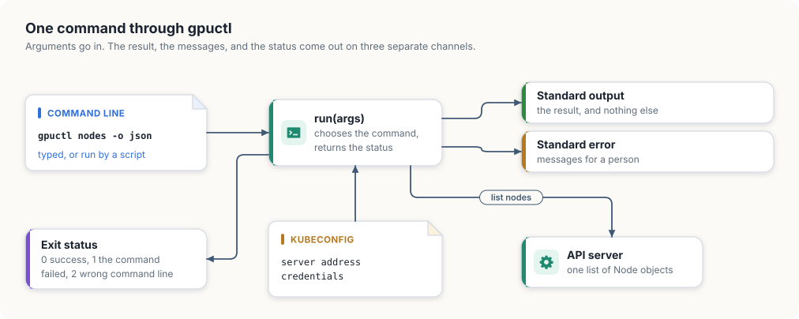
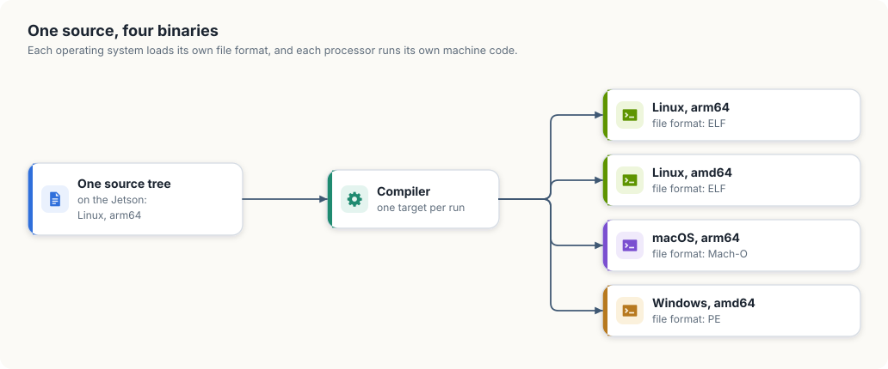

11. A command-line tool for Windows, macOS, and Linux
Everything we have built so far runs inside the cluster or next to it, on Linux. The people who use the cluster sit somewhere else. A researcher submits jobs from a MacBook, an operator checks nodes from a Windows laptop, and a build pipeline does both from a Linux container. What they all run is a command-line tool, and it is the one piece of a GPU platform that has to work on three operating systems.
In this chapter, we will write that tool. gpuctl is small: it lists the nodes of a
cluster with their GPUs, reports where it keeps its files, and prints its version. We
will first decide how a command-line tool should behave so that both people and scripts
can use it, then write it in Go and in Rust, and then build it for the three systems
from our Jetson and see where each language makes that easy and where it does not.
This chapter covers
- what a command line promises: output, messages, and an exit status
- where a tool’s files belong on Linux, macOS, and Windows
- reading the cluster’s nodes with client-go and with kube-rs
- a table for people and JSON for programs, from the same data
- building for three operating systems from one machine with Go
- what stops the same build in Rust, and how projects get around it
What a command line promises
A command-line tool has two kinds of user. A person reads what it prints. A script runs it, captures what it prints, and decides what to do next. A tool that serves both keeps three channels apart.
- Standard output carries the result and nothing else. A script that runs
gpuctl nodes -o jsonand feeds the output to another program must receive only JSON, with no progress messages or warnings mixed in. - Standard error carries everything meant for a person: errors, warnings, and help text shown after a mistake.
- The exit status is a small number the tool returns to whatever started it. By convention 0 means success. A script checks the status before it trusts the output.
gpuctl uses three statuses. 0 is success. 1 means the command was understood and
failed, for example because the cluster could not be reached. 2 means the command line
itself was wrong. The distinction lets a script retry a failure of the first kind and
stop at once on the second, since a mistyped command stays mistyped on the next
attempt.
Figure 11.1 shows the tool’s shape.

Low-level design: gpuctl
| Command | Prints to standard output | Fails with |
|---|---|---|
gpuctl nodes [-o table|json] | one row per node: name, GPUs, architecture, operating system, kubelet version | 1 if the cluster cannot be reached |
gpuctl config | the paths of its configuration file and of the kubeconfig | 1 if the home directory is unknown |
gpuctl version | the version and the platform | |
| anything else | nothing; the usage text goes to standard error | 2 |
| Function | Does |
|---|---|
configFile(), kubeconfig() | work out the two paths for the operating system the tool runs on |
listNodes() | one list request to the API server, reduced to the fields printed |
printNodes(rows, format) | writes a table or JSON |
run(args) | chooses the command and returns the exit status |
Where a tool’s files live
A tool that remembers settings needs a place to keep them, and each operating system has its own rule for where that is.
| System | Directory for a user’s settings | Example for gpuctl |
|---|---|---|
| Linux | $XDG_CONFIG_HOME, or ~/.config if it is unset | /home/ana/.config/gpuctl/config.toml |
| macOS | ~/Library/Application Support | /Users/ana/Library/Application Support/gpuctl/config.toml |
| Windows | the folder named by %AppData% | C:\Users\ana\AppData\Roaming\gpuctl\config.toml |
Two details in this table catch programs that were written on one system and run on
another. The directory differs, so a path built by joining the home directory and
.config is wrong on two of the three. And the separator between the parts of a path
differs: Windows uses a backslash. Both languages provide a path type that joins parts
with the right separator, filepath.Join in Go and PathBuf::join in Rust, and a
portable program builds every path with it and writes no separator of its own.
Go’s standard library knows the table: os.UserConfigDir returns the right directory
on each system. Rust’s standard library has no such function, so the Rust version
writes the three cases out. cfg!(windows) and cfg!(target_os = "macos") are decided
when the program is compiled, so each build contains only its own case.
Listing 11.1 The configuration file and the kubeconfig, in Go. code/go/gpuctl/main.go
// configFile returns the path of gpuctl's own configuration file. The
// directory is the one each operating system sets aside for a user's
// settings.
func configFile() (string, error) {
dir, err := os.UserConfigDir()
if err != nil {
return "", err
}
return filepath.Join(dir, "gpuctl", "config.toml"), nil
}
// kubeconfig returns the file that names the cluster and the credentials:
// the KUBECONFIG environment variable if it is set, and .kube/config in the
// user's home directory otherwise.
func kubeconfig() string {
return clientcmd.NewDefaultClientConfigLoadingRules().GetDefaultFilename()
}
Listing 11.2 The configuration file and the kubeconfig, in Rust. code/rust/gpuctl/src/main.rs
/// Returns the path of gpuctl's own configuration file. The directory is the
/// one each operating system sets aside for a user's settings.
fn config_file() -> Option<PathBuf> {
let dir = if cfg!(windows) {
PathBuf::from(env::var_os("AppData")?)
} else if cfg!(target_os = "macos") {
env::home_dir()?.join("Library").join("Application Support")
} else {
match env::var_os("XDG_CONFIG_HOME") {
Some(dir) if !dir.is_empty() => PathBuf::from(dir),
_ => env::home_dir()?.join(".config"),
}
};
Some(dir.join("gpuctl").join("config.toml"))
}
/// Returns the file that names the cluster and the credentials: the
/// KUBECONFIG environment variable if it is set, and .kube/config in the
/// user's home directory otherwise.
fn kubeconfig() -> Option<PathBuf> {
match env::var_os("KUBECONFIG") {
Some(path) if !path.is_empty() => Some(PathBuf::from(path)),
_ => Some(env::home_dir()?.join(".kube").join("config")),
}
}The second path is the kubeconfig, the file from which kubectl and every other client
reads the address of the API server and the user’s credentials. Its location follows
one rule on all three systems: the KUBECONFIG environment variable if it is set, and
.kube/config under the home directory otherwise. gpuctl reads the same file, so it
talks to whichever cluster kubectl talks to. The Go version asks client-go’s loading
rules for the path. The Rust version applies the rule itself.
Reading the nodes
gpuctl nodes makes one request, a list of Node objects, which we met in chapter 1,
and keeps five fields of each: the name, the allocatable nvidia.com/gpu count from
chapter 5, and the architecture, operating system, and kubelet version that the kubelet
reports about its machine.
Listing 11.3 Listing the nodes and keeping five fields, in Go. code/go/gpuctl/main.go
// NodeInfo is one row of "gpuctl nodes".
type NodeInfo struct {
Name string `json:"name"`
GPUs int64 `json:"gpus"`
Arch string `json:"arch"`
OS string `json:"os"`
Kubelet string `json:"kubelet"`
}
// listNodes asks the API server for every node and keeps the fields the
// command prints.
func listNodes(ctx context.Context) ([]NodeInfo, error) {
rules := clientcmd.NewDefaultClientConfigLoadingRules()
config, err := clientcmd.NewNonInteractiveDeferredLoadingClientConfig(rules, nil).ClientConfig()
if err != nil {
return nil, err
}
clientset, err := kubernetes.NewForConfig(config)
if err != nil {
return nil, err
}
nodes, err := clientset.CoreV1().Nodes().List(ctx, metav1.ListOptions{})
if err != nil {
return nil, err
}
rows := make([]NodeInfo, 0, len(nodes.Items))
for _, n := range nodes.Items {
gpus := n.Status.Allocatable["nvidia.com/gpu"]
rows = append(rows, NodeInfo{
Name: n.Name,
GPUs: gpus.Value(),
Arch: n.Status.NodeInfo.Architecture,
OS: n.Status.NodeInfo.OperatingSystem,
Kubelet: n.Status.NodeInfo.KubeletVersion,
})
}
return rows, nil
}
Listing 11.4 Listing the nodes and keeping five fields, in Rust. code/rust/gpuctl/src/main.rs
/// One row of "gpuctl nodes".
#[derive(Serialize)]
struct NodeInfo {
name: String,
gpus: i64,
arch: String,
os: String,
kubelet: String,
}
/// Asks the API server for every node and keeps the fields the command
/// prints.
async fn list_nodes() -> Result<Vec<NodeInfo>, kube::Error> {
let client = Client::try_default().await?;
let nodes = Api::<Node>::all(client)
.list(&ListParams::default())
.await?;
Ok(nodes
.into_iter()
.map(|node| {
let status = node.status.unwrap_or_default();
let info = status.node_info.unwrap_or_default();
let gpus = status
.allocatable
.and_then(|resources| resources.get("nvidia.com/gpu")?.0.parse().ok())
.unwrap_or(0);
NodeInfo {
name: node.metadata.name.unwrap_or_default(),
gpus,
arch: info.architecture,
os: info.operating_system,
kubelet: info.kubelet_version,
}
})
.collect())
}The Go version builds its client from the kubeconfig with clientcmd, the package of
client-go that implements the loading rule. Earlier programs used controller-runtime’s
GetConfigOrDie for this. A command-line tool wants the error back as a value, so that
it can print it and choose the exit status. In the Rust version, Client::try_default
does the same loading and returns a Result.
Kubernetes stores a resource amount as a quantity, a number with an optional unit
suffix such as 16031232Ki. A GPU count is a plain whole number. The Go version reads
it with the quantity’s Value method. In k8s-openapi a quantity is a wrapper around
the string the API server sent, so the Rust version parses that string as an integer,
and a node with no GPUs, which has no such entry at all, counts as zero.
One result, two forms
The rows are printed in one of two forms, chosen by the -o flag.
Listing 11.5 A table or JSON, in Go. code/go/gpuctl/main.go
// printNodes writes the rows as a table for a person or as JSON for a program.
func printNodes(out io.Writer, rows []NodeInfo, format string) error {
if format == "json" {
enc := json.NewEncoder(out)
enc.SetIndent("", " ")
return enc.Encode(rows)
}
table := tabwriter.NewWriter(out, 0, 0, 2, ' ', 0)
fmt.Fprintln(table, "NAME\tGPUS\tARCH\tOS\tKUBELET")
for _, r := range rows {
fmt.Fprintf(table, "%s\t%d\t%s\t%s\t%s\n", r.Name, r.GPUs, r.Arch, r.OS, r.Kubelet)
}
return table.Flush()
}
Listing 11.6 A table or JSON, in Rust. code/rust/gpuctl/src/main.rs
/// Writes the rows as a table for a person or as JSON for a program.
fn print_nodes(rows: &[NodeInfo], json: bool) -> serde_json::Result<()> {
if json {
println!("{}", serde_json::to_string_pretty(rows)?);
return Ok(());
}
let header = ["NAME", "GPUS", "ARCH", "OS", "KUBELET"].map(String::from);
let table: Vec<[String; 5]> = std::iter::once(header)
.chain(rows.iter().map(|r| {
[
r.name.clone(),
r.gpus.to_string(),
r.arch.clone(),
r.os.clone(),
r.kubelet.clone(),
]
}))
.collect();
// Each column is as wide as its longest cell, plus two spaces.
let widths: [usize; 5] =
std::array::from_fn(|col| table.iter().map(|row| row[col].len()).max().unwrap_or(0));
for row in &table {
let line: String = (0..5)
.map(|col| format!("{:<width$}", row[col], width = widths[col] + 2))
.collect();
println!("{}", line.trim_end());
}
Ok(())
}The table is for reading. Its columns are padded so that they line up, which Go’s
text/tabwriter does from tab-separated cells and the Rust version does by measuring
each column’s widest cell.
The JSON is for programs, and it is part of the tool’s interface in a way the table is
not. A script that reads gpus from each object keeps working when a later version
adds a column to the table or changes its spacing. For that reason the field names are
written out in both versions, as struct tags in Go and as the field names of a
Serialize struct in Rust, and they would not be renamed lightly.
Commands and exit statuses
run ties the pieces together. It looks at the first argument, carries out the
command, and returns the status. Every path through it ends in one of the three
statuses, and every message for a person goes to standard error.
Listing 11.7 Choosing the command and returning the status, in Go. code/go/gpuctl/main.go
// Exit statuses. A script that calls gpuctl tells a failed command from a
// mistyped one by the status alone.
const (
exitOK = 0
exitFailure = 1
exitUsage = 2
)
const usage = `usage:
gpuctl nodes [-o table|json]
gpuctl config
gpuctl version
`
Listing 11.8 Choosing the command and returning the status, in Rust. code/rust/gpuctl/src/main.rs
/// The exit status for a command line that is wrong. A script that calls
/// gpuctl tells a failed command from a mistyped one by the status alone:
/// success is 0 and failure is 1, which `ExitCode` already names.
const EXIT_USAGE: u8 = 2;
const USAGE: &str = "usage:
gpuctl nodes [-o table|json]
gpuctl config
gpuctl version
";Listing 11.9 The run function and main, in Go. code/go/gpuctl/main.go
// run carries out one command line and returns the exit status. It takes its
// arguments and its two output streams as parameters, so a test can call it
// without starting a process.
func run(args []string, out, errOut io.Writer) int {
if len(args) == 0 {
fmt.Fprint(errOut, usage)
return exitUsage
}
switch args[0] {
case "version":
fmt.Fprintf(out, "gpuctl %s %s/%s\n", version, runtime.GOOS, runtime.GOARCH)
case "config":
file, err := configFile()
if err != nil {
fmt.Fprintln(errOut, "gpuctl:", err)
return exitFailure
}
fmt.Fprintf(out, "config file %s\nkubeconfig %s\n", file, kubeconfig())
case "nodes":
flags := flag.NewFlagSet("nodes", flag.ContinueOnError)
flags.SetOutput(io.Discard)
format := flags.String("o", "table", "output format: table or json")
if err := flags.Parse(args[1:]); err != nil || (*format != "table" && *format != "json") {
fmt.Fprint(errOut, usage)
return exitUsage
}
rows, err := listNodes(context.Background())
if err == nil {
err = printNodes(out, rows, *format)
}
if err != nil {
fmt.Fprintln(errOut, "gpuctl:", err)
return exitFailure
}
default:
fmt.Fprintf(errOut, "gpuctl: unknown command %q\n%s", args[0], usage)
return exitUsage
}
return exitOK
}
func main() {
os.Exit(run(os.Args[1:], os.Stdout, os.Stderr))
}
Listing 11.10 The run function and main, in Rust. code/rust/gpuctl/src/main.rs
/// Carries out one command line and returns the exit status.
async fn run(args: &[String]) -> ExitCode {
let args: Vec<&str> = args.iter().map(String::as_str).collect();
match args.as_slice() {
["version"] => println!("gpuctl {} {}", env!("CARGO_PKG_VERSION"), platform()),
["config"] => {
let (Some(file), Some(kube)) = (config_file(), kubeconfig()) else {
eprintln!("gpuctl: cannot find the home directory");
return ExitCode::FAILURE;
};
println!(
"config file {}\nkubeconfig {}",
file.display(),
kube.display()
);
}
["nodes"] | ["nodes", "-o", "table" | "json"] => {
let json = args.last() == Some(&"json");
let rows = match list_nodes().await {
Ok(rows) => rows,
Err(e) => {
eprintln!("gpuctl: {e}");
return ExitCode::FAILURE;
}
};
if let Err(e) = print_nodes(&rows, json) {
eprintln!("gpuctl: {e}");
return ExitCode::FAILURE;
}
}
[] | ["nodes", ..] => {
eprint!("{USAGE}");
return ExitCode::from(EXIT_USAGE);
}
[other, ..] => {
eprint!("gpuctl: unknown command \"{other}\"\n{USAGE}");
return ExitCode::from(EXIT_USAGE);
}
}
ExitCode::SUCCESS
}
#[tokio::main]
async fn main() -> ExitCode {
let args: Vec<String> = env::args().skip(1).collect();
run(&args).await
}The Go version parses the -o flag with the standard flag package and tells it to
stay silent, so that run prints one consistent usage text for every kind of mistake.
The Rust version matches the whole argument list against patterns. The pattern
["nodes", "-o", "table" | "json"] accepts exactly the two valid forms, and any other
list that starts with nodes falls through to the usage arm.
Here is the tool on our cluster. Both versions print exactly this:
$ gpuctl nodes
NAME GPUS ARCH OS KUBELET
gpu-lab-control-plane 1 arm64 linux v1.37.0
$ gpuctl nodes -o json
[
{
"name": "gpu-lab-control-plane",
"gpus": 1,
"arch": "arm64",
"os": "linux",
"kubelet": "v1.37.0"
}
]
$ gpuctl config
config file /home/jetson/.config/gpuctl/config.toml
kubeconfig /home/jetson/.kube/config
$ gpuctl version
gpuctl 0.1.0 linux/arm64
$ gpuctl pods
gpuctl: unknown command "pods"
usage:
gpuctl nodes [-o table|json]
gpuctl config
gpuctl version
$ echo $?
2
The table and the JSON hold the same row: our one node, with its one GPU, on arm64.
The unknown command prints its message and the usage text on standard error and exits
with 2. When the cluster cannot be reached, each version prints the error its client
library produced and exits with 1. The Go version prints:
$ KUBECONFIG=/nonexistent gpuctl nodes
gpuctl: invalid configuration: no configuration has been provided, try setting KUBERNETES_MASTER environment variable
$ echo $?
1
Animation 11.1 shows three of these runs, each with its two streams and its status.
gpuctl: a success, a wrong command line, and a failure.Building for three systems
A program that runs on our Jetson is a file of ARM machine code in the format Linux loads, called ELF. A Windows laptop with an Intel processor needs different machine code in a different format, PE, and a MacBook needs ARM code in a third, Mach-O. Producing a program for a system other than the one the compiler runs on is called cross-compilation. Figure 11.2 shows what we are after.

In Go
The Go compiler and linker are written in Go and contain the code generators for every
platform Go supports. Two environment variables select the target: GOOS names the
operating system and GOARCH the processor. On our Jetson:
$ GOOS=windows GOARCH=amd64 go build -o gpuctl-windows-amd64 ./gpuctl
$ GOOS=darwin GOARCH=arm64 go build -o gpuctl-darwin-arm64 ./gpuctl
$ GOOS=linux GOARCH=amd64 go build -o gpuctl-linux-amd64 ./gpuctl
$ file gpuctl-*
gpuctl-darwin-arm64: Mach-O 64-bit arm64 executable, flags:<|DYLDLINK|PIE>
gpuctl-linux-amd64: ELF 64-bit LSB executable, x86-64, version 1 (SYSV), statically linked
gpuctl-windows-amd64: PE32+ executable (console) x86-64, for MS Windows
Three commands on an ARM Linux board produced programs for Windows, macOS, and Intel
Linux. Each file is between 37 and 39 MB and needs nothing else installed: the Go runtime and
all of client-go are inside it. This works because gpuctl and everything it imports
are written in Go. A Go program that calls C code through cgo loses this property and
needs a C compiler for each target.
In Rust
Rust selects a target with a target triple, such as x86_64-unknown-linux-gnu or
aarch64-apple-darwin, and rustup target add installs the standard library for one.
Our Jetson has these installed:
$ rustup target list --installed
aarch64-apple-darwin
aarch64-unknown-linux-gnu
x86_64-unknown-linux-gnu
The Rust compiler can generate code for all three. The build stops for another reason:
$ cargo check -p gpuctl --target x86_64-unknown-linux-gnu
warning: ring@0.17.14: Compiler family detection failed due to error: ToolNotFound:
failed to find tool "x86_64-linux-gnu-gcc": No such file or directory (os error 2)
error: failed to run custom build command for `ring v0.17.14`
ring is the cryptography library that kube-rs uses, through its TLS library, for its
encrypted connection to the API server. Parts of it are written in C and assembly, and
its build compiles them with a C compiler for the target. Our board has a C compiler
for ARM Linux and none for Intel Linux or for macOS. The same would happen at the last
step of any Rust build for another system: Rust calls the target system’s linker to
produce the final file, and that linker has to be installed.
So cross-compiling Rust means supplying a C toolchain for each target. Projects handle
this in one of two ways. Most build each target on a machine that runs it: a pipeline
with one Linux, one macOS, and one Windows runner, each running a plain cargo build --release and uploading its binary. Others install cross toolchains, either one by one
or through a tool such as cross, which runs the build inside a container image that
has the right toolchain for the target.
A Rust program with no C in its dependencies gets further. fleethealth from chapter 4
uses only the standard library, and cargo check -p fleethealth --target aarch64-apple-darwin passes on our Jetson, which shows that the compiler itself has no
difficulty with the target. The difficulty belongs to one dependency with C in it, the
same condition under which Go’s cross-compilation stops working.
Two names for one processor. gpuctl version prints linux/arm64 from both
versions, and the Rust version has to translate to do so. Go and Kubernetes call the
64-bit ARM architecture arm64 and the 64-bit Intel one amd64. Rust and the Linux
kernel call them aarch64 and x86_64. Tools that download a binary for the current
machine have to map between the two spellings, and a release that names its files by
one convention is found by scripts that expect the other only if someone wrote that
mapping down.
The complete program
Listing 11.11 The complete program in Go. code/go/gpuctl/main.go
// Command gpuctl is a small command-line client for a GPU cluster, written to
// build and behave the same on Linux, macOS, and Windows.
//
// gpuctl nodes [-o table|json] list the cluster's nodes and their GPUs
// gpuctl config print where gpuctl looks for its files
// gpuctl version print the version and the platform
//
// Data goes to standard output and messages to standard error. The exit
// status is 0 on success, 1 when a command fails, and 2 when the command line
// is wrong.
//
// Run it from code/go with:
//
// go run ./gpuctl nodes
package main
import (
"context"
"encoding/json"
"flag"
"fmt"
"io"
"os"
"path/filepath"
"runtime"
"text/tabwriter"
metav1 "k8s.io/apimachinery/pkg/apis/meta/v1"
"k8s.io/client-go/kubernetes"
"k8s.io/client-go/tools/clientcmd"
)
// version is the tool's version, printed by "gpuctl version".
const version = "0.1.0"
// Exit statuses. A script that calls gpuctl tells a failed command from a
// mistyped one by the status alone.
const (
exitOK = 0
exitFailure = 1
exitUsage = 2
)
const usage = `usage:
gpuctl nodes [-o table|json]
gpuctl config
gpuctl version
`
// configFile returns the path of gpuctl's own configuration file. The
// directory is the one each operating system sets aside for a user's
// settings.
func configFile() (string, error) {
dir, err := os.UserConfigDir()
if err != nil {
return "", err
}
return filepath.Join(dir, "gpuctl", "config.toml"), nil
}
// kubeconfig returns the file that names the cluster and the credentials:
// the KUBECONFIG environment variable if it is set, and .kube/config in the
// user's home directory otherwise.
func kubeconfig() string {
return clientcmd.NewDefaultClientConfigLoadingRules().GetDefaultFilename()
}
// NodeInfo is one row of "gpuctl nodes".
type NodeInfo struct {
Name string `json:"name"`
GPUs int64 `json:"gpus"`
Arch string `json:"arch"`
OS string `json:"os"`
Kubelet string `json:"kubelet"`
}
// listNodes asks the API server for every node and keeps the fields the
// command prints.
func listNodes(ctx context.Context) ([]NodeInfo, error) {
rules := clientcmd.NewDefaultClientConfigLoadingRules()
config, err := clientcmd.NewNonInteractiveDeferredLoadingClientConfig(rules, nil).ClientConfig()
if err != nil {
return nil, err
}
clientset, err := kubernetes.NewForConfig(config)
if err != nil {
return nil, err
}
nodes, err := clientset.CoreV1().Nodes().List(ctx, metav1.ListOptions{})
if err != nil {
return nil, err
}
rows := make([]NodeInfo, 0, len(nodes.Items))
for _, n := range nodes.Items {
gpus := n.Status.Allocatable["nvidia.com/gpu"]
rows = append(rows, NodeInfo{
Name: n.Name,
GPUs: gpus.Value(),
Arch: n.Status.NodeInfo.Architecture,
OS: n.Status.NodeInfo.OperatingSystem,
Kubelet: n.Status.NodeInfo.KubeletVersion,
})
}
return rows, nil
}
// printNodes writes the rows as a table for a person or as JSON for a program.
func printNodes(out io.Writer, rows []NodeInfo, format string) error {
if format == "json" {
enc := json.NewEncoder(out)
enc.SetIndent("", " ")
return enc.Encode(rows)
}
table := tabwriter.NewWriter(out, 0, 0, 2, ' ', 0)
fmt.Fprintln(table, "NAME\tGPUS\tARCH\tOS\tKUBELET")
for _, r := range rows {
fmt.Fprintf(table, "%s\t%d\t%s\t%s\t%s\n", r.Name, r.GPUs, r.Arch, r.OS, r.Kubelet)
}
return table.Flush()
}
// run carries out one command line and returns the exit status. It takes its
// arguments and its two output streams as parameters, so a test can call it
// without starting a process.
func run(args []string, out, errOut io.Writer) int {
if len(args) == 0 {
fmt.Fprint(errOut, usage)
return exitUsage
}
switch args[0] {
case "version":
fmt.Fprintf(out, "gpuctl %s %s/%s\n", version, runtime.GOOS, runtime.GOARCH)
case "config":
file, err := configFile()
if err != nil {
fmt.Fprintln(errOut, "gpuctl:", err)
return exitFailure
}
fmt.Fprintf(out, "config file %s\nkubeconfig %s\n", file, kubeconfig())
case "nodes":
flags := flag.NewFlagSet("nodes", flag.ContinueOnError)
flags.SetOutput(io.Discard)
format := flags.String("o", "table", "output format: table or json")
if err := flags.Parse(args[1:]); err != nil || (*format != "table" && *format != "json") {
fmt.Fprint(errOut, usage)
return exitUsage
}
rows, err := listNodes(context.Background())
if err == nil {
err = printNodes(out, rows, *format)
}
if err != nil {
fmt.Fprintln(errOut, "gpuctl:", err)
return exitFailure
}
default:
fmt.Fprintf(errOut, "gpuctl: unknown command %q\n%s", args[0], usage)
return exitUsage
}
return exitOK
}
func main() {
os.Exit(run(os.Args[1:], os.Stdout, os.Stderr))
}
Listing 11.12 The complete program in Rust. code/rust/gpuctl/src/main.rs
//! A small command-line client for a GPU cluster, written to build and behave
//! the same on Linux, macOS, and Windows.
//!
//! ```text
//! gpuctl nodes [-o table|json] list the cluster's nodes and their GPUs
//! gpuctl config print where gpuctl looks for its files
//! gpuctl version print the version and the platform
//! ```
//!
//! Data goes to standard output and messages to standard error. The exit
//! status is 0 on success, 1 when a command fails, and 2 when the command line
//! is wrong.
//!
//! Run it from code/rust with:
//!
//! ```text
//! cargo run -p gpuctl -- nodes
//! ```
use std::env;
use std::path::PathBuf;
use std::process::ExitCode;
use k8s_openapi::api::core::v1::Node;
use kube::{Api, Client, api::ListParams};
use serde::Serialize;
/// The exit status for a command line that is wrong. A script that calls
/// gpuctl tells a failed command from a mistyped one by the status alone:
/// success is 0 and failure is 1, which `ExitCode` already names.
const EXIT_USAGE: u8 = 2;
const USAGE: &str = "usage:
gpuctl nodes [-o table|json]
gpuctl config
gpuctl version
";
/// Returns the path of gpuctl's own configuration file. The directory is the
/// one each operating system sets aside for a user's settings.
fn config_file() -> Option<PathBuf> {
let dir = if cfg!(windows) {
PathBuf::from(env::var_os("AppData")?)
} else if cfg!(target_os = "macos") {
env::home_dir()?.join("Library").join("Application Support")
} else {
match env::var_os("XDG_CONFIG_HOME") {
Some(dir) if !dir.is_empty() => PathBuf::from(dir),
_ => env::home_dir()?.join(".config"),
}
};
Some(dir.join("gpuctl").join("config.toml"))
}
/// Returns the file that names the cluster and the credentials: the
/// KUBECONFIG environment variable if it is set, and .kube/config in the
/// user's home directory otherwise.
fn kubeconfig() -> Option<PathBuf> {
match env::var_os("KUBECONFIG") {
Some(path) if !path.is_empty() => Some(PathBuf::from(path)),
_ => Some(env::home_dir()?.join(".kube").join("config")),
}
}
/// One row of "gpuctl nodes".
#[derive(Serialize)]
struct NodeInfo {
name: String,
gpus: i64,
arch: String,
os: String,
kubelet: String,
}
/// Asks the API server for every node and keeps the fields the command
/// prints.
async fn list_nodes() -> Result<Vec<NodeInfo>, kube::Error> {
let client = Client::try_default().await?;
let nodes = Api::<Node>::all(client)
.list(&ListParams::default())
.await?;
Ok(nodes
.into_iter()
.map(|node| {
let status = node.status.unwrap_or_default();
let info = status.node_info.unwrap_or_default();
let gpus = status
.allocatable
.and_then(|resources| resources.get("nvidia.com/gpu")?.0.parse().ok())
.unwrap_or(0);
NodeInfo {
name: node.metadata.name.unwrap_or_default(),
gpus,
arch: info.architecture,
os: info.operating_system,
kubelet: info.kubelet_version,
}
})
.collect())
}
/// Writes the rows as a table for a person or as JSON for a program.
fn print_nodes(rows: &[NodeInfo], json: bool) -> serde_json::Result<()> {
if json {
println!("{}", serde_json::to_string_pretty(rows)?);
return Ok(());
}
let header = ["NAME", "GPUS", "ARCH", "OS", "KUBELET"].map(String::from);
let table: Vec<[String; 5]> = std::iter::once(header)
.chain(rows.iter().map(|r| {
[
r.name.clone(),
r.gpus.to_string(),
r.arch.clone(),
r.os.clone(),
r.kubelet.clone(),
]
}))
.collect();
// Each column is as wide as its longest cell, plus two spaces.
let widths: [usize; 5] =
std::array::from_fn(|col| table.iter().map(|row| row[col].len()).max().unwrap_or(0));
for row in &table {
let line: String = (0..5)
.map(|col| format!("{:<width$}", row[col], width = widths[col] + 2))
.collect();
println!("{}", line.trim_end());
}
Ok(())
}
/// Returns the platform in the form Go prints it, such as `linux/arm64`.
/// Rust calls the architectures `aarch64` and `x86_64`.
fn platform() -> String {
let arch = match env::consts::ARCH {
"aarch64" => "arm64",
"x86_64" => "amd64",
other => other,
};
format!("{}/{arch}", env::consts::OS)
}
/// Carries out one command line and returns the exit status.
async fn run(args: &[String]) -> ExitCode {
let args: Vec<&str> = args.iter().map(String::as_str).collect();
match args.as_slice() {
["version"] => println!("gpuctl {} {}", env!("CARGO_PKG_VERSION"), platform()),
["config"] => {
let (Some(file), Some(kube)) = (config_file(), kubeconfig()) else {
eprintln!("gpuctl: cannot find the home directory");
return ExitCode::FAILURE;
};
println!(
"config file {}\nkubeconfig {}",
file.display(),
kube.display()
);
}
["nodes"] | ["nodes", "-o", "table" | "json"] => {
let json = args.last() == Some(&"json");
let rows = match list_nodes().await {
Ok(rows) => rows,
Err(e) => {
eprintln!("gpuctl: {e}");
return ExitCode::FAILURE;
}
};
if let Err(e) = print_nodes(&rows, json) {
eprintln!("gpuctl: {e}");
return ExitCode::FAILURE;
}
}
[] | ["nodes", ..] => {
eprint!("{USAGE}");
return ExitCode::from(EXIT_USAGE);
}
[other, ..] => {
eprint!("gpuctl: unknown command \"{other}\"\n{USAGE}");
return ExitCode::from(EXIT_USAGE);
}
}
ExitCode::SUCCESS
}
#[tokio::main]
async fn main() -> ExitCode {
let args: Vec<String> = env::args().skip(1).collect();
run(&args).await
}Summary
- A command-line tool writes its result to standard output, its messages to standard error, and reports success or the kind of failure in its exit status.
- A user’s settings live in a different directory on Linux, macOS, and Windows, and paths are joined with the path type of the language, which supplies the separator.
- The kubeconfig is found by one rule on every system, and a tool that follows it talks to the same cluster as kubectl.
- A table serves a reader, and JSON with stable field names serves scripts.
- Go cross-compiles a pure Go program with two environment variables. A Rust program cross-compiles when a C toolchain and linker for the target are present, and projects usually build each target on its own operating system.
References
- Go,
os.UserConfigDir: https://pkg.go.dev/os#UserConfigDir - Go, Installing Go from source, the list of
GOOSandGOARCHvalues: https://go.dev/doc/install/source#environment - The rustc book, Platform support: https://doc.rust-lang.org/rustc/platform-support.html
- The Cargo book,
cargo build --target: https://doc.rust-lang.org/cargo/commands/cargo-build.html - Kubernetes, Organizing cluster access using kubeconfig files: https://kubernetes.io/docs/concepts/configuration/organize-cluster-access-kubeconfig/
- XDG Base Directory Specification: https://specifications.freedesktop.org/basedir-spec/latest/
cross, zero-setup cross compilation for Rust: https://github.com/cross-rs/cross